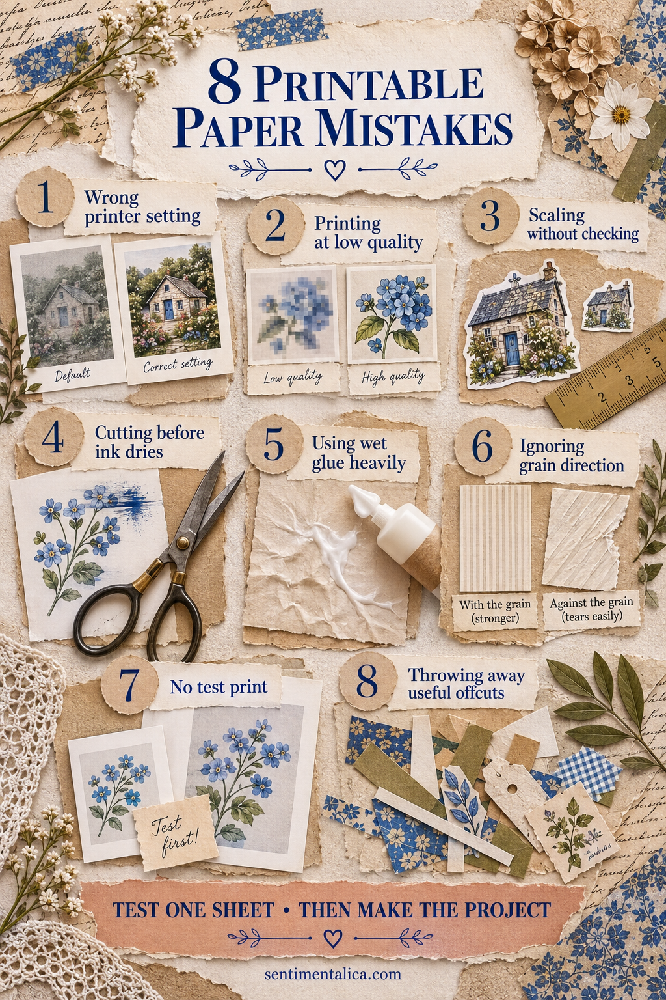
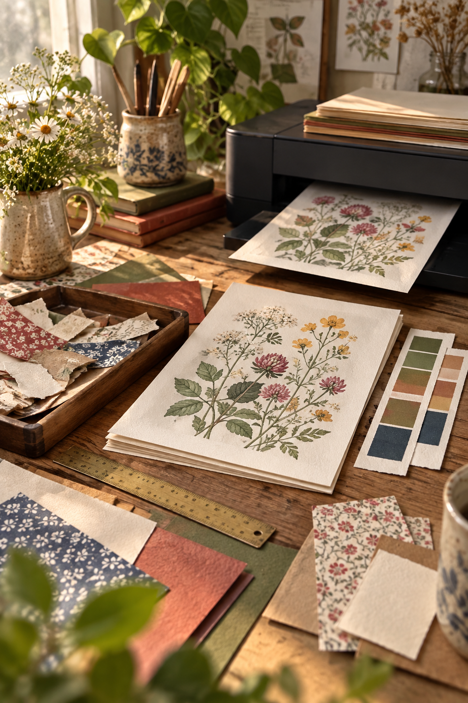

Printable paper makes it easy to repeat a favorite design, but small setup mistakes can waste ink and beautiful cardstock. Most problems are preventable with one ordinary sheet of test paper and a pause before cutting.
1. Using the wrong printer setting
The printer needs to know what kind of paper it is feeding. Select the closest paper type and quality setting available. Heavy cardstock on a plain-paper setting may receive too little ink or feed poorly.
Check the printer’s supported weight before using very thick paper.
2. Printing at low quality
Draft mode is useful for placement tests, not final artwork. For the finished sheet, use standard or high quality and allow the printer to complete its slower pass.
If colors suddenly look striped, run the printer’s nozzle check before printing another full page.
3. Scaling without checking
“Fit to page” can quietly change the size of pockets, cards and matching pieces. Print at 100% when the project depends on exact dimensions.
For decorative images, scaling is fine—but preview the result and confirm that nothing important is clipped.
4. Cutting before the ink dries
Fresh ink can smudge beneath a ruler or transfer to your fingers. Place the sheet flat and leave it alone for several minutes; coated papers may need longer.
Cut light colors first and dark saturated areas last to reduce accidental transfer.
5. Using too much wet glue
Printed paper can curl when it absorbs moisture. Apply a thin coat to the stronger receiving surface, then lower the printed piece onto it.
For narrow labels and small details, a dry adhesive is often cleaner.
6. Ignoring grain direction
Cardstock folds more neatly with the grain. Test an offcut by bending it gently in both directions. The easier, smoother bend follows the grain.
Whenever possible, position card folds and booklet spines in that direction.
7. Skipping the test print
Print the first copy on inexpensive plain paper. Check scale, orientation, margins and whether the back side will align correctly.
Mark the top of the test sheet before duplex printing; it will reveal how your printer flips the page.
8. Throwing away useful offcuts
Long borders become tabs and hinges. Small patterned pieces become cluster accents. Plain margins become labels or reinforcement strips.
Keep only usable shapes in a shallow tray and recycle the dust-like scraps. A limited container prevents saving from becoming clutter.

The one-sheet check
Before committing your best paper, confirm four things: correct scale, correct side, suitable print quality and enough drying time. Fold and cut the plain-paper test as if it were final. Ten careful minutes can save an entire project.

Printing is part of the craft, not merely preparation. A controlled test gives you freedom later, because you can cut and assemble without wondering whether the pieces will fit.